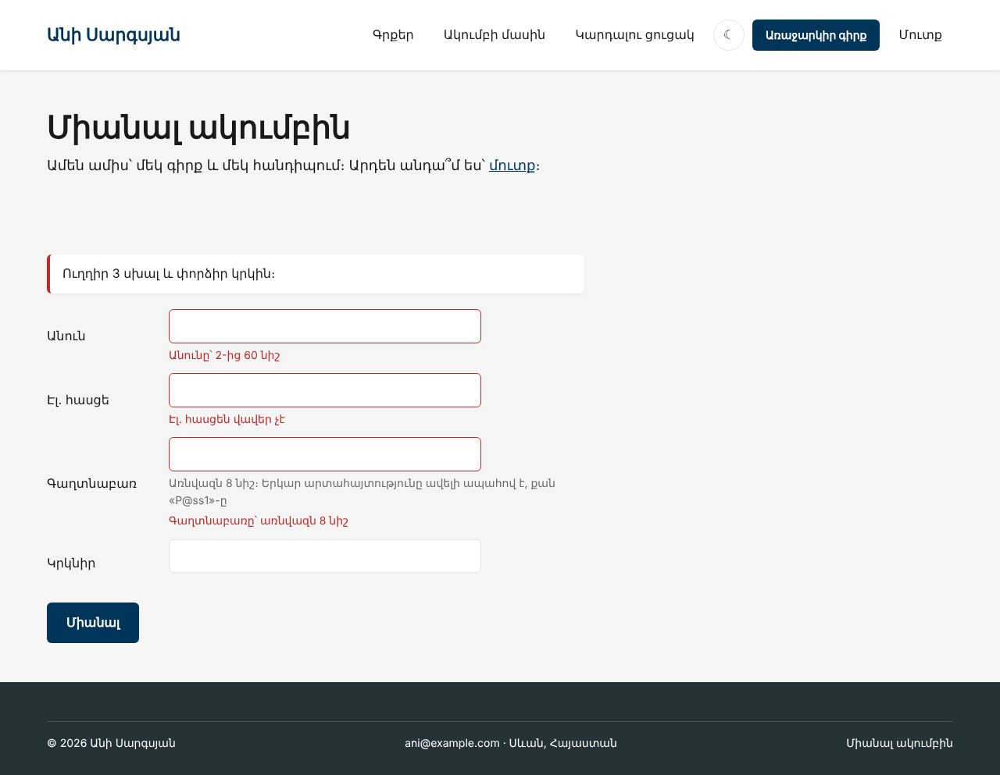
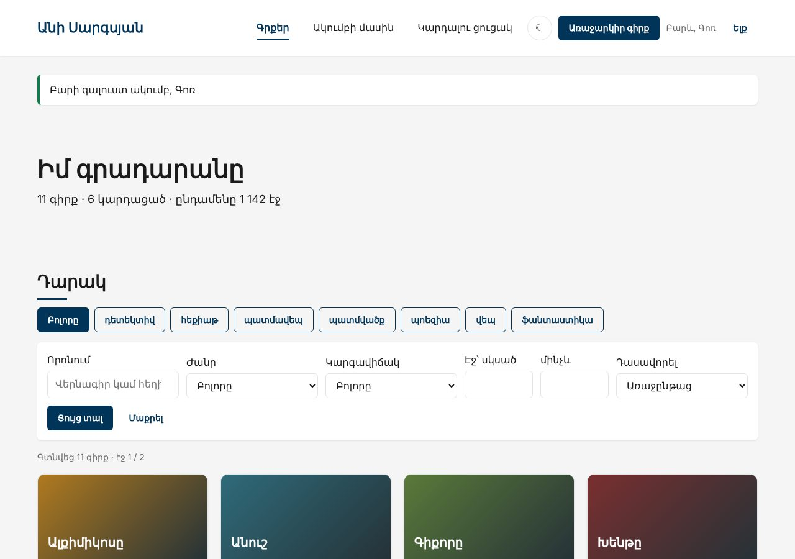
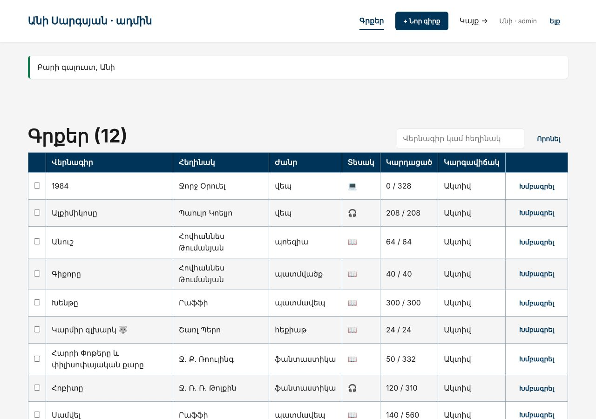
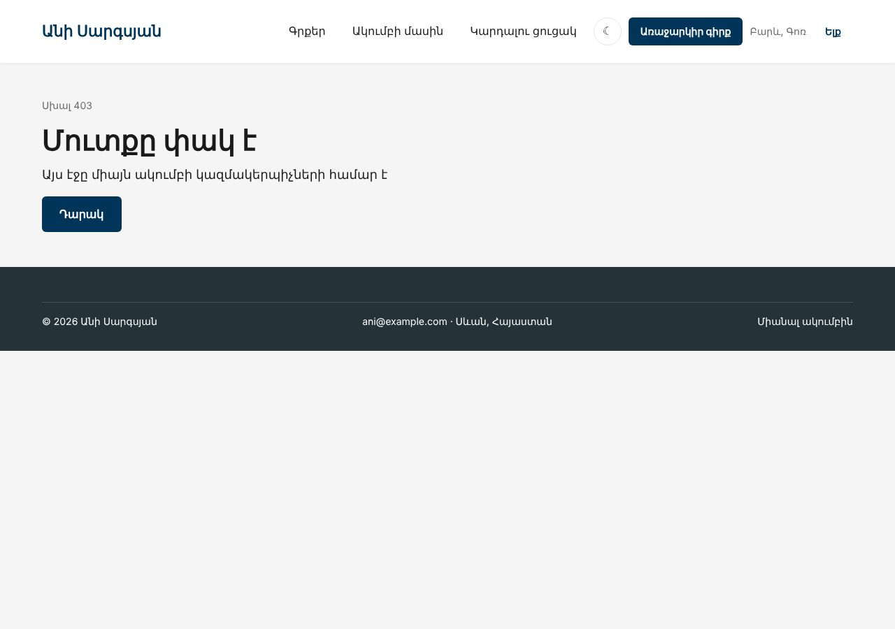

Տնային աշխատանք · PHP Դաս 16 · մինի-նախագիծ
Ակումբը ստանում է անդամներ։ Գրանցումը, մուտքը և ելքը՝ password_hash-ով և session_regenerate_id-ով։ Երեք դեր․ Անին (admin) կառավարում է ամեն ինչ, Լիլիթը (editor) ավելացնում և խմբագրում է, Արամը (member) կազմում է ցուցակ։ Ամեն POST ֆորմա պաշտպանված է CSRF token-ով։
Դաս 01–16․ password_hash, password_verify, password_needs_rehash, session_regenerate_id, CSRF token (random_bytes, hash_equals), դերեր, 403/419, LoginThrottle, microtime։ JSON API՝ Դաս 17։




$ curl -i -X POST http://localhost:8000/admin/books/archive -d "ids[]=2"
HTTP/1.1 419 Unknown Status Code== Նույն գաղտնաբառը երկու անգամ
$2y$10$zzN/5s07ZTrdgRWlFjXd5uN583wXnbvixrd1aBVOIpaxBb99UWL2K
$2y$10$ch4YYrjUNzPBkhZhfgLDO.mmHPX2M3LMnR0K79SZYVSFalt5vlo0C
$a === $b → false (ամեն անգամ նոր salt)
password_verify(..., $a) → true
password_verify(..., $b) → true
== Ժամանակ
password_hash 58.1 մվ
md5 0.0001 մվ
→ Դանդաղը այստեղ լավ է․ հարձակվողը վայրկյանում միլիոնավոր md5 կփորձի, բայց ընդամենը տասնյակ bcrypt
== Սեսիա
մինչև u6qrggm4g4mnjdftnf1rddhe77
հետո i852ftctjmtmbbq8r9rrpoapvb
→ Մուտքից հետո հին id-ն այլևս չի աշխատում (session fixation)Շարունակիր քո նախագիծը։ Եթե բաց ես թողել նախորդ դասը, սկսիր Դաս 15-ի օրինակից։
starter/lab/csrf-attack.html — «չար» էջ CSRF փորձի համար (տնային 2)starter/sql/upgrade-16.sql — users աղյուսակ և երեք անդամ (գաղտնաբառերը՝ ֆայլի մեկնաբանությունում)| Գործարկել |
|---|
composer install && php -S localhost:8000 -t public public/index.php |
starter/sql/upgrade-16.sql-ը․ երեք անդամ հեշերովrole՝ DEFAULT 'member'attempt()՝ password_verify ՄԻՇՏ, նույնիսկ եթե հասցեն չկաlogin()՝ session_regenerate_id(true) (տնային 6)logout()՝ սեսիա և cookiepublic function attempt(string $email, string $password): bool
{
$user = $this->users->findByEmail($email);
// ⭐ Ստուգում ենք ՄԻՇՏ, նույնիսկ երբ անդամը չկա․ թե չէ պատասխանի արագությունը
// կհուշեր, որ այդ հասցեն գոյություն չունի (timing attack, տնային 5)
$hash = $user?->passwordHash ?? '$2y$10$' . str_repeat('x', 53);
if (!password_verify($password, $hash) || $user === null) {
return false;
}
if (password_needs_rehash($hash, PASSWORD_DEFAULT)) {
$this->users->updatePassword($user->id, password_hash($password, PASSWORD_DEFAULT));
}
$this->login($user);
return true;
}RegisterController՝ միայն name և email ֆորմայիցrole=admin և ստուգիր HeidiSQL-ում (տնային 10)csrf_field()՝ ամեն <form method="post">-ումpublic/index.php-ում, ՄԻՆՉԵՎ Router-ըlab/csrf-attack.html-ը (տնային 2)// 1. CSRF — ամեն վիճակ փոխող հարցում, ԱՌԱՋ ուղղորդումից (Դաս 16)
if ($request->method !== 'GET' && $request->method !== 'HEAD') {
if (!csrf_verify($request->input('_token'))) {
throw new HttpException('Ձևաթուղթը ժամկետանց է։ Թարմացրու էջը և փորձիր կրկին։', 419);
}
}
// 2. Ադմին գոտի — մուտք գործա՞ծ է
$isAdminArea = $request->path === '/admin' || str_starts_with($request->path, '/admin/');
if ($isAdminArea && !auth()->check()) {
if ($request->method === 'GET') {
$_SESSION['intended'] = $request->path; // մուտքից հետո՝ հենց այստեղ
}
$response = Response::redirect('/login');
// 3. Մուտք գործած է, բայց անձնակազմի՞ց է ⭐ (մուտքը ≠ իրավունք)
} elseif ($isAdminArea && !auth()->isStaff()) {
throw new HttpException('Այս էջը միայն ակումբի կազմակերպիչների համար է', 403);
} else {
$response = $router->dispatch($request);/admin…՝ մուտք (302 → /login) և isStaff() (403)isAdmin(), կոնտրոլերում (տնային 7)/admin/book/{slug}/…, որ նույն կանոնը պաշտպանի (տնային 8)public/lab-auth.php՝ երկու հեշ մեկ գաղտնաբառից, password_hash և md5 ժամանակով, PHPSESSID-ը մինչև և հետո (տնային 3, 4, 6)/admin/books-ում ստանում է 403, Լիլիթը չի տեսնում «Թաքցնել»_token-ի → 419member, ինչ էլ ուղարկվի ֆորմայով| Սխալ | Ինչպես ուղղել |
|---|---|
| Ամեն ֆորմա տալիս է 419 | Ֆորմայում չկա <?= csrf_field() ?>, կամ սեսիան չի պահվում |
| Մուտքից հետո դեռ «Մուտք» է գրված | Header-ը կարդում է auth()-ը, իսկ login()-ը չի գրել $_SESSION['user_id'] |
password_verify-ը միշտ false է | Սյունակը VARCHAR(60)-ից կարճ է, և հեշը կտրվել է․ VARCHAR(255) |
| Editor-ը կարողանում է թաքցնել curl-ով | Կոճակը թաքցնելը պաշտպանություն չէ․ ստուգումը՝ կոնտրոլերում |
Սրանք Դաս 16-ի տնային աշխատանքի կետերն են։ «մինի-նախագծում» նշվածները արդեն կատարել ես վերևի քայլերում՝ Անիի ակումբում։ Մնացածը կատարիր ՏեխնոՄարկետում, ինչպես գրված է դասում։
===-ը այստեղ չի աշխատի։ մինի-նախագծումpassword_hash()-ի ժամանակը microtime()-ով։ Համեմատիր md5()-ի հետ։ մինի-նախագծումsession_regenerate_id()-ի աշխատանքը՝ համեմատիր PHPSESSID-ն մուտքից առաջ և հետո։ մինի-նախագծում/admin/delete-ը թույլատրված է միայն role = 'admin'-ին ($auth->isAdmin()), մյուսներին՝ 403։ մինի-նախագծում/manage/orders հասցեով (առանց /admin-ի)։ Պաշտպանվա՞ծ է։ Ինչ կանոն պետք է պահել, որ սա չպատահի։ մինի-նախագծում<input name="role" value="admin"> և ուղարկիր։ HeidiSQL-ում ստուգիր նոր օգտագործողի դերը։ Բացատրիր, ինչու այն չփոխվեց։ մինի-նախագծումLoginThrottle-ի օրինակով՝ առավելագույնը 3 նոր հաշիվ մեկ սեսիայից ժամում։ Ինչու՞ է սա ուսումնական, ոչ իրական պաշտպանություն (բաժին 05)։ մինի-նախագծումAuth-ը։ Ի՞նչ գտավ։ Համաձա՞յն ես։Երբ բաժին 03-ի բոլոր կետերը նշված են, բացիր օրինակը։ Օրինակում lab-… ֆայլերը փորձնական են․ դրանք հաջորդ դասի օրինակում այլևս չկան։ Գործարկելուց առաջ ստեղծիր բազան example/sql/-ի ֆայլերով և .env-ը (composer install)։ Գտիր մեկ բան, որ դու արել ես այլ կերպ, և մտածիր՝ որն է ավելի հասկանալի և ինչու։ Քո լուծումը կարող է տարբերվել և լինել ճիշտ։